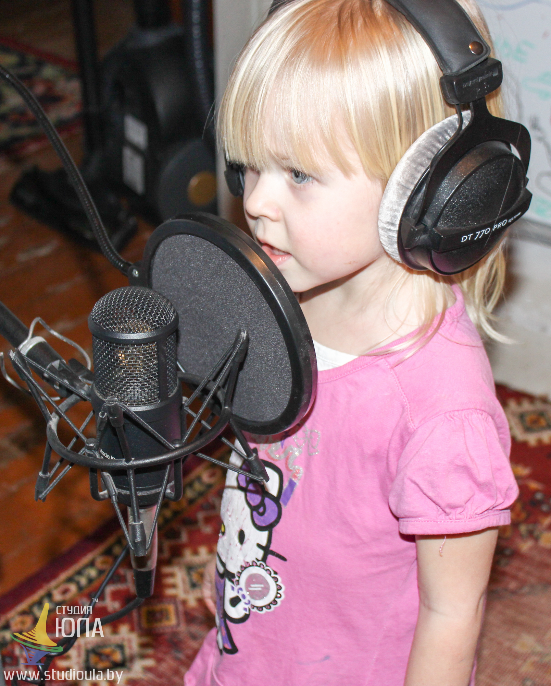
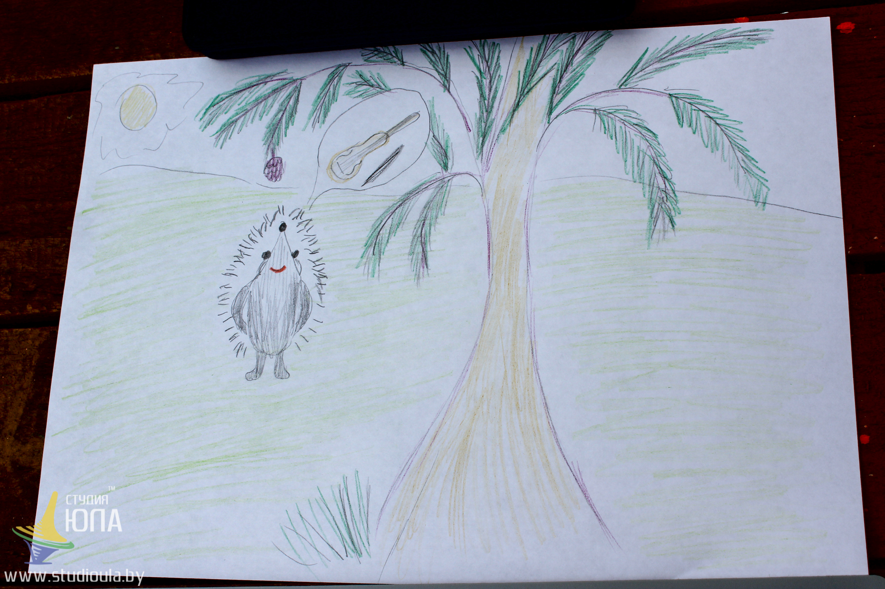
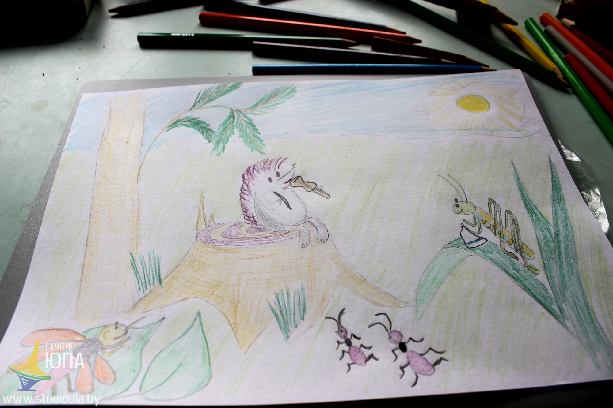

Первая проба Таи в роли сказочницы. Чтоб сделать аудио более ярким, прорисовала отдельные сцены сказки. Произведение абсолютно очаровательное. Смотрите сами, покажите детям, ведь их так просто вдохновить!
 Вот так оно и было...  Ежик созрел.  Иногда лучше играть чем говорить, особенно когда ты ежик. Ведь говорящий ежик, по-моему, это более странно, чем играющий на скрипке)Сказка в оригинале.
Сергей Козлов. Ежикина скрипка
Ежик давно хотел научиться играть на скрипке. "Что ж,- говорил он, - птицы поют, стрекозы звенят, а я только шипеть умею?"
И он настрогал сосновых дощечек, высушил их и стал мастерить скрипку. Скрипка вышла легонькая, певучая, с веселым смычком.
Закончив работу, Ежик сел на пенек, прижал к мордочке скрипку и потянул сверху вниз смычок. "Пи-и-и..." - запищала скрипка. И Ежик улыбнулся. <"Пи-пи-пи-пи.." - вылетело из-под смычка. И Ежик стал придумывать мелодию.
"Надо придумать такую, - думал он,- чтобы шумела сосна, падали шишки и дул ветер. Потом, чтобы ветер стих, а одна шишка долго-долго качалась, а потом, наконец, шлепнулась - хлоп! И тут должны запищать комары, и наступит вечер".p>
Он поудобнее уселся на пеньке, покрепче прижал скрипку и взмахнул смычком.
"Ууу!.." - загудела скрипка. "Нет, - подумал Ежик, - так, пожалуй, гудит пчела... Тогда пускай это будет полдень. Пускай гудят пчелы, ярко светит солнышко и по дорожкам бегают муравьи. И он, улыбаясь, заиграл: "У-у-у! У-у-у-у!.."
"Получается!" - обрадовался Ежик. И целый день, до вечера, играл "Полдень".
"У-у-у! У-у-у!.." - неслось по лесу. И посмотреть на Ежика собрались тридцать муравьев, два кузнечика и один комар.
- Вы немножко фальшивите, - вежливо сказал комар, когда Ежик устал.- Четвертое "у" надо взять чуть-чуть потоньше. Вот так... И он запищал: "Пи-и-и!.." - Нет, - сказал Ежик, - вы играете "Вечер", а у меня "Полдень". Разве вы не слышите?
Комар отступил на шаг своей тоненькой ножкой, склонил голову набок и приподнял плечи. - Да-да, - сказал он, прислушиваясь. - Полдень! В это время я очень люблю спать в траве. - А мы, - сказали два кузнечика,- в полдень работаем в кухне. К нам как раз через полчаса залетит стрекоза и попросит выковать новое крылышко!.. - А у нас, - сказали муравьи, - в полдень - обед. А один муравей вышел вперед и сказал: - Поиграйте, пожалуйста, еще немного: я очень люблю обедать! Ежик прижал скрипку и заводил смычком. - Очень вкусно! - сказал муравей. - Я каждый вечер буду приходить слушать ваш "Полдень".
Выпала роса.
Ежик, как настоящий музыкант, поклонился с пенька муравьям, кузнечикам и комару и унес скрипку в дом, чтобы она не отсырела.
Вместо струн на скрипке были натянуты травинки, и, засыпая, Ежик думал, как завтра он натянет свежие струны и добьется все-таки того, чтобы скрипка шумела сосной, дышала ветром и топотала падающими шишками...
Текст и фото Юля Воробьева.